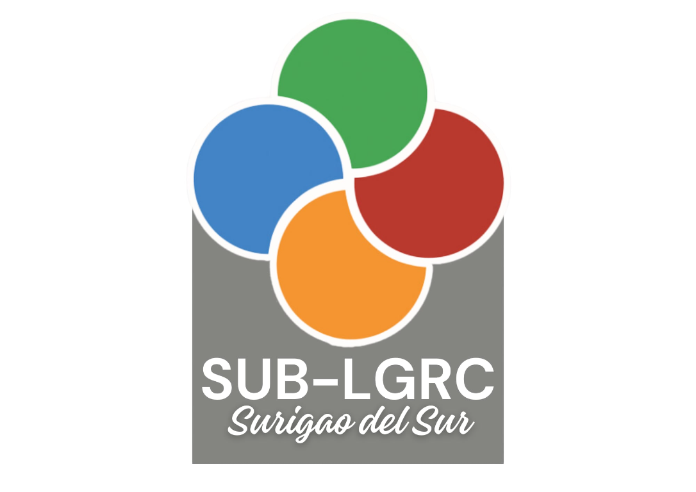

Anchored on the Department's role as the primary catalyst for excellence in local governance, the Local Governance Resource Center (LGRC) supports this mandate and facilitates the integration of knowledge management in DILG processes and systems towards building the Department as a Knowledge Centric Organization (KCO). It also capitalizes on the premise that LGRC is DILG and vice-versa and that every DILG activity is attributed to the LGRC.
The primary goal of the LGRC is to promote a culture of learning and knowledge sharing in local governance. It is guided by three (3) major principles which are Knowledge Management (KM), Multi-stakeholdership and Convergence.
KEY PRINCIPLES
Knowledge Management is the systematic process of capturing, organizing, sharing, and leveraging knowledge assets to enhance organizational performance and innovation. It ensures that critical information and expertise are accessible to the right people at the right time, fostering a culture of continuous learning and informed decision-making across all levels of local governance.
Multi-stakeholdership refers to the active engagement and collaboration of various sectors including government agencies, civil society organizations, the private sector, academic institutions, and community groups in the planning, implementation, and evaluation of local governance programs. This principle ensures that diverse perspectives are considered, promoting inclusive and participatory governance.
Convergence is the strategic alignment and integration of resources, efforts, and programs across different stakeholders and sectors to achieve common development goals. By avoiding duplication and maximizing the impact of limited resources, convergence ensures that local governance initiatives are coherent, complementary, and effectively address the multidimensional challenges faced by communities.
PROGRAM FACILITIES

Capacity Development Facility
Venue to deliver or facilitate the delivery of quality, strategic and responsive capacity development for promoting and undertaking replication of exemplary practices through Go-FAR.
Provide Support to local development planning.
Activities include: content development and technical assistance

Linkage Program Facility
Brokers link between LGUs and other local governance stakeholders and programs
Provides access to network of coaches, experts and local resource institutions
Activities include: brokering, expert directory locator
Help desk and Information Referral Service

Public Education and Citizenship Program Facility
Promotes good local governance practices and innovations
Knowledge sharing, knowledge exchange programs through conferences, round table discussions and forums on exemplary practices, tools and processes, cases, policy issues and governance trends
Information Dissemination
Partnerships with media for public education

Multi-media and Knowledge Program Facility
Repository and channel of communication and information sharing of books, publications, exemplary and replicable practices, audio-video materials and other knowledge products
Provides access to: LGRC Website and Integrated Library Management System
Provides access to and use of Local Governance Performance Management System